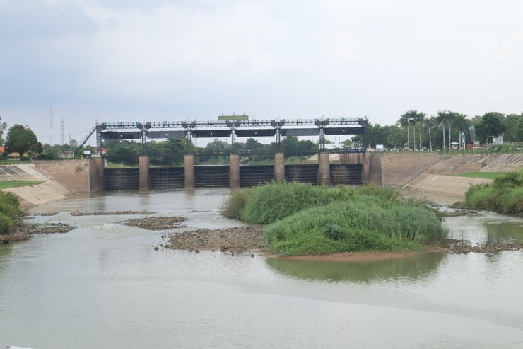
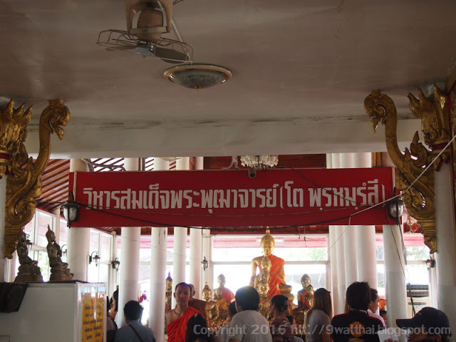

มาทำความรู้จักกับประวัติของวัดกันเลยจ้า
วัดสะตือสร้างขึ้นเป็นวัดนับแต่ พ.ศ. ๒๔๐๐ เดิมตั้งอยู่ทางทิศเหนือขึ้นไปไม่ไกลนัก ที่เรียกว่า วัดสะตือ เพราะมีต้นสะตือใหญ่เป็นนิมิต ต่อเมื่อสมเด็จ พระพุฒาจารย์ (โต) พรหมรังสี ได้มาดำเนินการสร้างพระพุทธไสยาสน์แล้ว วัดสะตือจึงได้ย้ายมาตั้งที่บริเวณพระนอนนี้และ เรียกนามตามชื่อตำบลว่า “วัดท่างาม”ต่อมา สมเด็จพระพุทธเจ้าหลวง รัชกาลที่๕ ได้เสด็จไปทรงนมัสการพระพุทธบาท ได้เสด็จขึ้นที่ท่าตำบลนี้ ๒ ครั้ง แต่นั้นมาจึงเรียกตำบลว่า “ตำบลท่าหลวง” และเรียกนามวัดว่า “วัดท่าหลวง” แต่ต่อมากลับไปเรียกว่า “วัดสะตือ” ตามนามเดิมอีก ซึ่งยุติต้องกันกับการเสด็จประพาสต้นครั้งที่ ๒ ตามจดหมายเหตุรัชกาลที่ ๕ ระบุไว้ตอนหนึ่งว่า “วันที่ ๓๑ กรกฎาคม ร.ศ. ๑๒๕ (พ.ศ.๒๔๔๙) ได้กินข้าวกลางวันที่วัดท่างาม ทรงทำครัวและเสวยที่ตรง บริเวณใต้เศียรพระนอนใหญ่ และที่เรียกกันว่า ท่าหลวง นั้นเกิดขึ้นใหม่ เพราะพระจุลจอมเกล้าฯ เสด็จมานมัสการรอยพระพุทธบาท ๒ ครั้ง ขึ้นที่ท่างามทั้ง ๒ ครั้งตามพระราชนิพนธ์ รัชกาลที่ ๕ ในจดหมายเหตุเรื่องเสด็จประพาสต้น ครั้งที่ ๒ วัดท่างามดังกล่าวนั้นหมายถึง “วัดสะตือ” ในปัจจุบัน และ ที่วัดนี้มีโรง เรียนประถมศึกษาของทางราชการตั้งอยู่ในบริเวณที่ดินของวัด
วัดสะตือได้รับพระราชทานวิสุงคามสีมาครั้งหลังวันที่ ๘ กันยายน พ.ศ. ๒๔๘๙ เขตวิสุงคามสีมา กว้าง ๑๐ เมตร ยาว ๒๔ เมตร อนุสรณ์แห่งเจ้าประ คุณ“สมเด็จพระพุฒาจารย์ (โต พรฺหมฺรํสี) ท่านได้ทรงสร้างพระพุทธรูปองค์ใหญ่ปางไสยาสน์ มีพระนามว่า “พระพุทธไสยาสน์” (แต่ชาวบ้านโดยทั่วไปมัก เรียนว่า “หลวงพ่อโต”) ณ วัดสะตือ ต.ท่าหลวง อ.ท่าเรือ จ.พระนครศรีอยุธยา เพื่อไว้เป็นอนุสรณ์ว่าท่านเกิด ณ ที่แห่งนี้ เมื่อปี พ.ศ ๒๔๑๓ ตรงกับในสมัย รัชกาลที่ ๕ นามว่า “พระพุทธไสยาสน์” การก่อสร้างพระพุทธไสยาสน์ ในปีพุทธศักราช ๒๔๑๓ ก่อนที่เจ้าประคุณสมเด็จพุฒาจารย์โต จะมรณภาพ ๓ ปี สมเด็จฯโตมรณภาพเมื่อวันที่ ๒๒ มิถุนายน ๒๔๑๕ (ที่กรุงเทพฯ) ได้มาทำการก่อสร้างพระพุทธรูปก่ออิฐถือปูนปางพุทธไสยาสน์ ณ หมู่บ้านที่ถือกำเนิดที่วัด ท่างามปัจจุบันคือ วัดสะตือ ตำบลท่าหลวง อำเภอท่าเรือ จังหวัดพระนครศรีอยุธยา ซึ่งพระนอนใหญ่มีขนาด ยาว ๑ เส้น ๖ วา สูง (ตั้งแต่พื้นถึงรัศมี) ๘ วา ฐาน ยาว ๑ เส้น ๑๐ วา กว้าง ๔ วา ๒ ศอก หรือ ยาว ๕๒ เมตร กว้าง ๙ เมตร สูง ๑๖ เมตร องค์พระโปร่ง เบื้องพระปฤษฎางค์ ทำเป็นช่องกว้าง ๒ ศอก สูง ๑ วา สถานที่ก่อสร้างองค์พระประดิษฐานอยู่กลางแจ้ง ณ ที่ริมคูวัด ด้านตะวันออก ซึ่งอยู่ริมแม่น้ำป่าสัก
ภาพประทับใจของวัดสะตือ
งานเทศกาล (งานประจำปี)ของวัดสะตือ
จุดเด่น จุดที่น่าสนใจของวัดสะตือ
 ไหว้พระนอนองค์ใหญ่ |
ที่ให้อาหารปลา |
|---|---|
กราบพระธาตุ |
 เขื่อนพระราม 6 |
ที่กราบไหว้พระ |
สะพานเดินข้ามระหว่างวัดสะตือกับวัดไก่จ้น |
 วิหารสมเด็จพระพุฒาจารย์(โต พรหมรสี) |
ตลาดนัดวัดสะตือ |
วงดนตรีแก้บน |
 ร้านลำดวนอยู่ไม่ห่างจากวัดเท่าไหร่ เป็นจุดที่พักผ่อน |
ข้อมูลแนะนำ
การเดินทาง
แผนที่การเดินทาง
ข้อมูลการติดต่อ
มารับชมวิดีโอกันเถอะจ้า